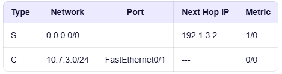
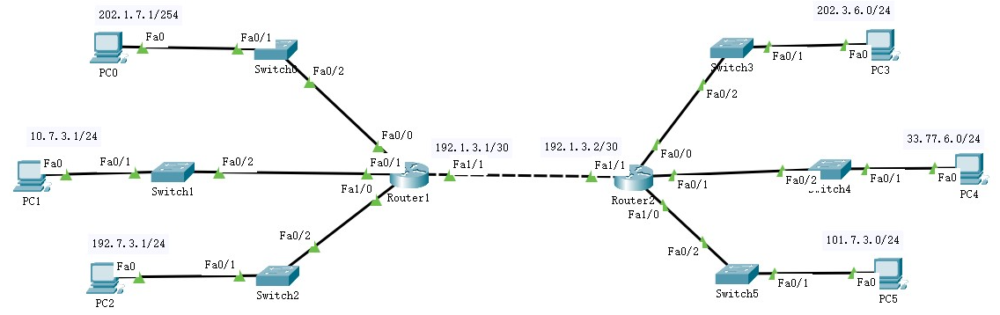
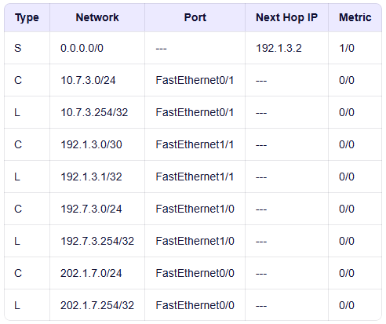
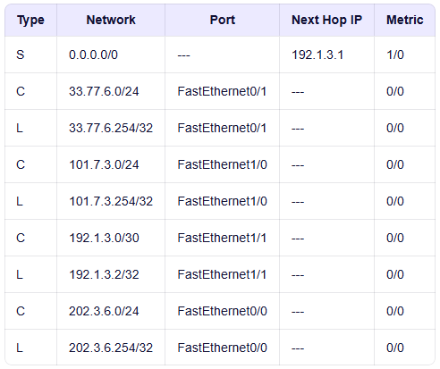

路由 Route
- 内容 Contents
- 静态路由 Static Route
- 默认路由 Default Route

- 静态路由就是“人工指路”，告诉路由器：“去某个地方，就走这条路”
- 通常由网络管理员手动配置和维护的路由条目，用于告诉路由器如何转发数据包到特定目标网络
- 静态路由是预先设定、不会自动改变的路径规则。只要网络拓扑不变化，这条路由就一直有效；一旦网络结构改变，必须手动修改
- 资源消耗小，不需要像动态路由那样交换协议报文，节省CPU和带宽
- 安全性高，不对外广播路由信息，更隐蔽
- 应用 Application
- 小型或简单网络
网络结构简单、设备少，路由路径固定
手动配置几条路由即可实现全网互通，无需复杂的动态路由协议
- 默认路由
- 控制特定流量路径
需要精确控制某些数据走特定线路（如安全策略、负载分离）
- 资源受限设备
路由器性能较弱，无法运行复杂的动态路由协议（如RIP、OSPF），静态路由更节省CPU和内存
- 1号网和3号网直连；2号网和3号网直连；可以自动生成通往彼此的直连路由
- 1号网和2号网没有直连，所以不能自动生成通往彼此的直连路由；要实现数据通信，必须指明到达目标网络的路由
- 对1号网→2号网，Router0的决策：目标网络是2号网络；输出接口为g0/0/1，下一跳IP地址为192.168.3.2
- 对2号网→1号网，Router1的决策：目标网络是1号网络；输出接口为g0/0/1，下一跳IP地址为192.168.3.1
- 需配置静态路由：
Router0 上配置去往 2号网 的静态路由（下一跳 192.168.3.2）
Router1 上配置去往 1号网 的静态路由（下一跳 192.168.3.1）
- Router0
- Router1
- 配置出口的路由
- 路由配置命令
prefix：目的网络的网络地址
mask：目的网络的地址掩码
ip：下一跳的IP地址
- Router0
- Router1
- 转发端口没有体现：虽然静态路由配置命令中没有直接写出转发端口，但路由器会根据下一跳IP地址，结合自身的直连路由表，自动推导出应该从哪个接口转发。因此，端口信息是隐含的、由系统自动计算得出的，不需要手动指定。这就是为什么配置中看不到端口，但数据仍能正确转发的原因。
- 路由机制的一部分
- 前2次通信失败，是因为网络初期还没有获取到各主机的MAC地址，所以要先发ARP
- 2次失败是因为有2级路由器存在，所以要发2次ARP
- 也可以在路由器的配置选项卡完成静态路由的创建；下方会显示相应的命令
选择 static 标签页设置静态路由 - 可视化
[] 静态路由配置 点击下载PT文件
第一部分 网络分析 Analyze

第二部分 路由器IP参考配置 IP Configuration
Router(config)# inter g0/0/0 Router(config-if)# ip address 192.168.1.254 255.255.255.0 Router(config-if)# no shutdown Router(config)# inter g0/0/1 Router(config-if)# ip address 192.168.3.1 255.255.255.252 Router(config-if)# no shutdown
Router(config)# inter g0/0/0 Router(config-if)# ip address 192.168.2.254 255.255.255.0 Router(config-if)# no shutdown Router(config)# inter g0/0/1 Router(config-if)# ip address 192.168.3.2 255.255.255.252 Router(config-if)# no shutdown


第三部分 路由器静态路由配置 Route Configuration
ip route prefix mask ip
Router>en Router#conf ter Router(config)#inter g0/0/1 Router(config)# ip route 192.168.2.0 255.255.255.0 192.168.3.2
Router>en Router#conf ter Router(config)#inter g0/0/1 Router(config)# ip route 192.168.1.0 255.255.255.0 192.168.3.1


说明 Tips


- 一种特殊的路由， 匹配所有 目标地址
- 即当数据包的目的IP地址无法匹配路由表中的任何其他路由条目时，路由器就会使用默认路由来转发该数据包
- 如果没有指定，则丢弃报文
- 解决方案 Solution
- 针对每个网络单独指定一条静态路由
- 适用 Apply
- 某个IP分组的目的IP地址和路由表中的所有路由项都不匹配 - 没有匹配
- 路由器通往的多个网络有相同的下一跳，但无法聚合路由 - 大杂烩
- 特点 Feature
- 优先级最低
- 网络前缀为0，即默认匹配所有IP分组
- 可能导致分组无限循环直到TTL耗尽
- 应认真仔细检查、配置路由
- 搭建拓扑、根据分配地址完成配置
- 配置静态路由
- 配置完成后的路由表
- 验证 Verify
- 分别使用以下方法验证网络连通性
- 使用 PING 验证
- 发送简单数据包或
- 定制数据分组
在模拟通信模式下，由PC0发送一个不匹配任何路由的PDU
Router1匹配不到具体的路由项，则由默认路由转发给Router2，每次转发TTL都减1
Router2匹配不到具体的路由项，则由默认路由转发给Router1，每次转发TTL都减1
当TTL时间为0时，数据包被丢弃
查看数据分组在两个路由器之间的转发过程
0.0.0.0/0

默认路由是一种特殊的静态路由，表示“当没有其他路可走时，就走这条路”，通常用于接入互联网或简化路由配置
| 范围 | 匹配特定网络；如 192.168.2.0/24 | 匹配所有网络；如 0.0.0.0/0 |
| 配置方式 | 手动添加 | 手动添加；属于静态路由 |
| 类型标识 | 路由表中显示为 S(Static) | 同样显示为 S* 或 S 0.0.0.0/0 |
| 优先级 | 比动态路由高，但低于直连路由 | 是最后的“兜底”选项，优先级最低 |
[] 默认路由配置

Router1：ip route 0.0.0.0 0.0.0.0 192.1.3.2
Router2：ip route 0.0.0.0 0.0.0.0 192.1.3.1



Homework
- Reading